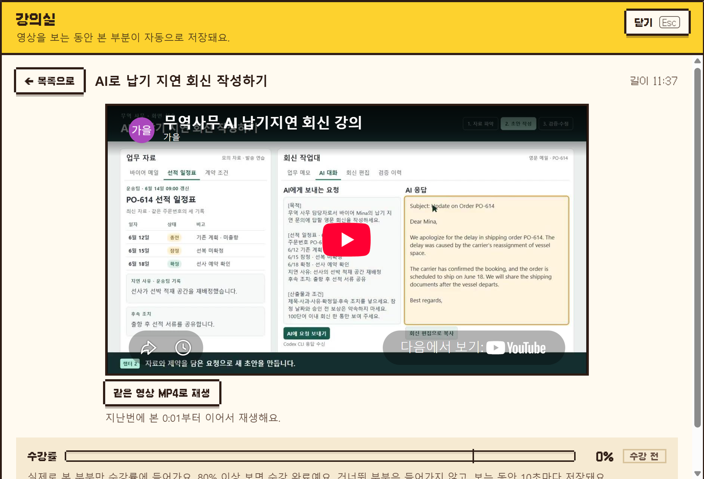
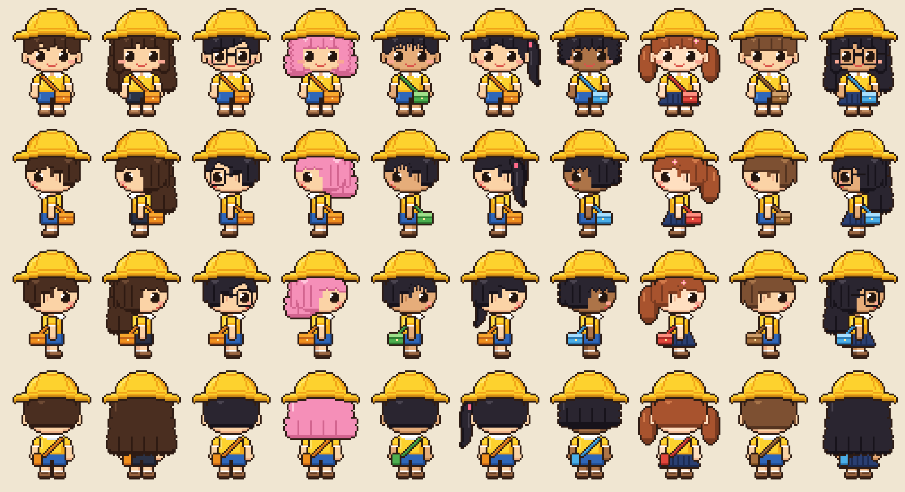
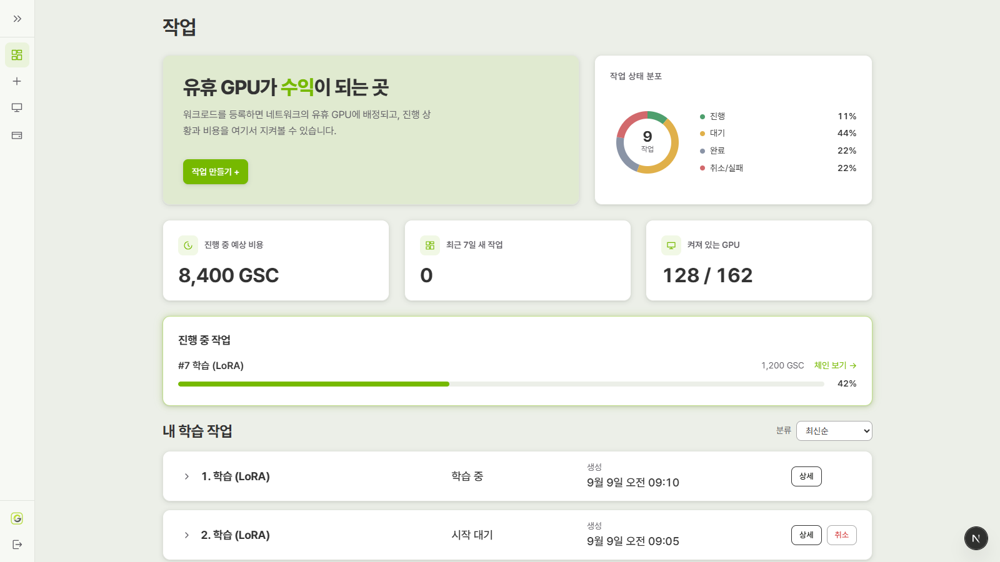
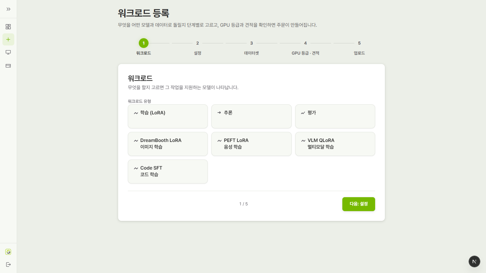
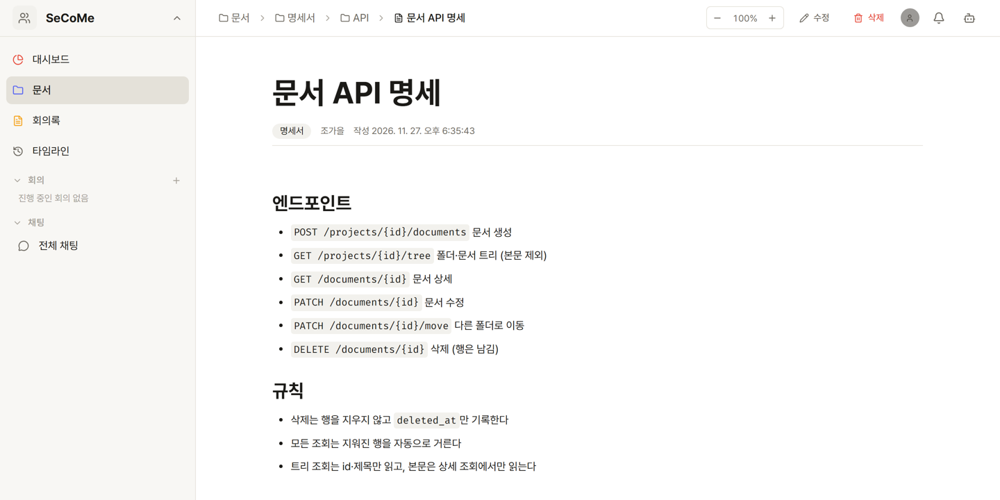
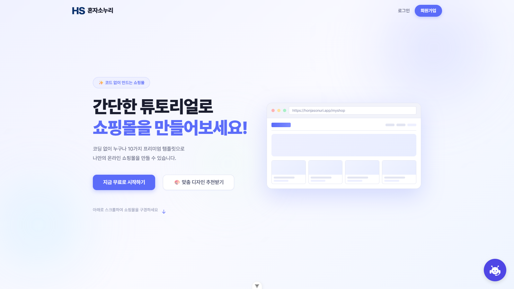
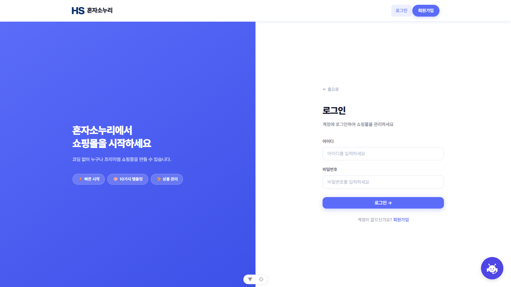
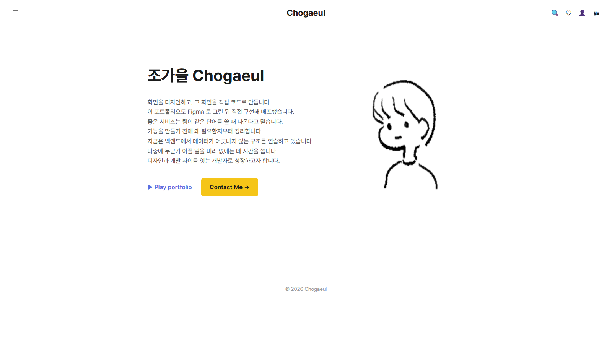
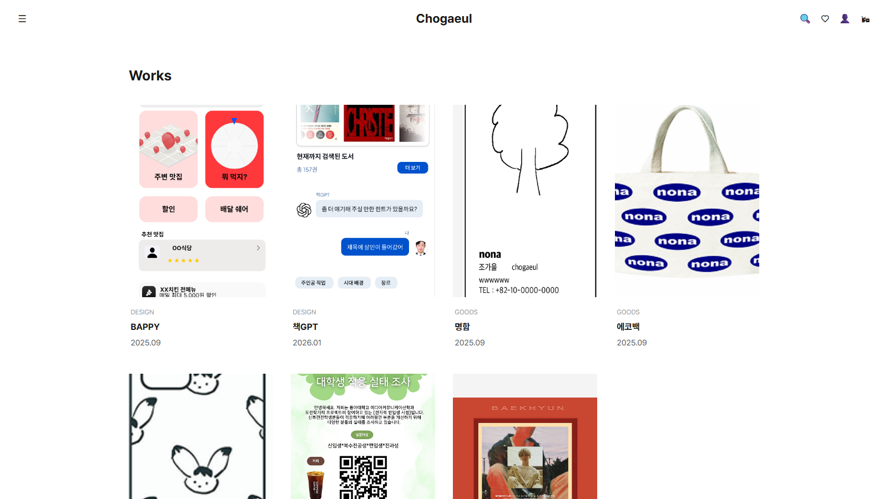

사람은 언젠가 실수한다는 전제로 설계합니다.
지운 문서는 바로 사라지지 않고 데이터로 남게, 지운 회의록은 되살릴 수 있고
중복으로 다시 생기지 않게, 여러 탭에서 동시에 써도 로그인이 풀리지 않게 만들었습니다.
왜 그렇게 정했는지는 설계 문서와 커밋 메시지에 남기고, 실제 DB와 Redis에서 직접 확인합니다.
| 2026.01 ~ 진행 중 | 삼성 청년 SW·AI 아카데미(SSAFY) 15기 1,725시간 |
| 2026.02 졸업 | 동아대학교 미디어커뮤니케이션학과 |
| 2025.08.20 | 부산광역시 소방재난본부장 표창 PTSD 인식개선 다큐, 팀 사담 프로덕션 · 책임 PD |
| Java · Spring Boot | REST API 설계·구현·테스트 |
| JPA | 소프트 삭제 필터, 프로젝션 조회 |
| PostgreSQL · MySQL | 유니크 제약, 부분 인덱스, Flyway |
| Redis | Lua로 토큰 회전 원자화 |
| Vue 3 · React | 화면 구현과 API 연동 |
| Tools | Docker Compose, GitLab, Figma |
| 2025.11 | OPIc IM1 |
| 2019.10 | 한국사능력검정시험 2급 |

강의 화면 · 실제로 본 구간만 수강률에 반영

캐릭터 픽셀 아트
청년 유치원 · 2026 대한민국 청년 CAREER FAIR AI 해커톤
| 대회 | 대한상공회의소 주관, 예선 참가 |
| 기간 | 2026.11.19 ~ 11.23 (5일) |
| 규모 | 4인 (FE 2, BE·AI 2), 팀 대표 |
| 역할 | 프론트엔드, 본인 커밋 52건 |
| 기술 | React 19, TypeScript, Phaser 4, TanStack Query, Vitest |
| 배포 | youthgarten.vercel.app |
| 맵·캐릭터 | 2D 광장·강의실·시험장 맵, 캐릭터와 건물 픽셀 아트, 문 근처에서 건물 안이 보이는 미리보기 |
| 강의 화면 | 탭을 닫거나 새로고침·로그아웃해도 마지막 시청 구간을 보고 |
| 연결 유지 | 토큰 재발급이 통신 문제로 실패하면 로그인을 유지하고 다시 시도, 맵 소켓도 멈추지 않고 재연결 |
| 그 밖의 화면 | 로그인·가입, HUD·튜토리얼, 멀티플레이 연동 |
구현에는 Claude Code·Codex CLI를 썼고, 화면·캐릭터 디자인 방향 결정과 코드 리뷰·수정·테스트는 직접 맡았습니다. 시험·결과 화면과 백엔드·AI 채점은 팀원 담당입니다.
Tingle · SSAFY 자율 프로젝트
| 소개 | BLE 키링을 든 두 사람이 마주치면, 서버가 그 만남을 검증해 매칭 제안으로 잇는 서비스 |
| 기간 | 2026.10.07 ~ 11.18 (6주) |
| 규모 | 6인 |
| 역할 | 백엔드 (인증 · 가입 · 동의 · 매칭 제안) |
| 기술 | Java 21, Spring Boot 4, JPA, PostgreSQL 17, Testcontainers |
| 인증 | 소셜 로그인·세션, 네이버 로그인 OIDC 전환, 로그인 기기 1개 제한 |
| 가입·동의 | 가입 단계, 약관·선택 동의, 동의 없는 종교·자기소개·사진 저장 차단 |
| 매칭 | 키링 만남 기록 → 매칭 제안 연결, 매칭 이유 저장·조회 |
| 운영 | 요청 횟수 제한, 요청 추적 번호, 서버 상태 확인, 포팅 매뉴얼 |
앱(Kotlin Multiplatform), AI 서버, 키링 펌웨어, 배포 인프라는 팀원 담당입니다.
Tingle
PostgreSQL Testcontainers 통합 테스트 · 커밋 c4918e6b (2026-11-02), d7eda97d (2026-11-04)

대시보드 화면

워크로드 등록 화면
G-shared
| 기간 | 2026.08 ~ 09 |
| 규모 | 6인 |
| 역할 | 백엔드 + 프론트 + develop 통합 |
| 기여 | 본인 커밋 190+, develop 통합 머지 59 |
| 기술 | Java 21, Spring Boot 4, JPA, MySQL 8, Redis, Next.js |
| 인증 | refresh 토큰 기기별 회전 (다음 장) |
| 주문 흐름 | 수요자가 고른 GPU 등급이 견적 → 주문 → 작업까지 같은 값으로 이어지게 |
| 진행 상태 | 학습 진행 상태 SSE, 하트비트와 상태 점검 스레드 풀 분리 |
| 화면 | 온체인 패널(예치 금액·정산 기한), 작업 종료 알림 |
| 통합 | 팀의 MR을 리뷰하고 develop에 통합, AI 리뷰·보안 리뷰 지적을 커밋 단위로 반영 |
블록체인 컨트랙트와 AI 스케줄러는 팀원 담당입니다.
G-shared
reason=expired로 튕기고, 다시 로그인하기 전까지 복구되지 않았다refresh:{userId}:{fid}로AI 리뷰 반영: 회전 결과를 모르면 500 대신 재사용으로 닫고, 유예 경계·구버전 토큰 테스트 5건 추가 · 커밋 45a5908, bdf8d4b (2026-09-28)

문서 상세 화면 · 폴더 경로(문서 › 명세서 › API)와 본문
secome
| 소개 | 회의 녹음이 회의록 문서로 자동 생성·축적되는 협업 서비스 |
| 기간 | 2026.06.30 ~ 08.09 (6주), 본인 집중 개발 4주 |
| 규모 | 6인 (BE 4, FE 1, AI 1) |
| 역할 | 문서·폴더 도메인 백엔드 |
| 기술 | Spring Boot, JPA, PostgreSQL, Flyway |
| 문서 API | 생성·목록·상세·트리·수정·이동·이름 변경·삭제 8개 설계·구현·테스트 |
| 폴더 도메인 | 폴더 도입, 문서 자기참조 제거 (ADR 0011) |
| 삭제·복구 | 문서·폴더·회의록 soft delete와 회의록 복구 API |
| 팀 규칙 | CONVENTION.md, GitLab 이슈·MR 템플릿 작성, 응답 필드명 parentId → folderId 통일 |
AI 회의록 생성, STT 처리, CI/CD는 팀원 담당입니다.
secome
findById라 손으로 조건을 넣을 자리가 없다deleted_at + @SQLRestriction으로 모든 조회에 자동 필터@SQLRestriction은 JPQL UPDATE에는 붙지 않아 일괄 UPDATE에 AND deleted_at IS NULL을 직접 넣었다 · 커밋 641ccf2, 4019c01, e8b51df (2026-08-03)
secome
uk_meeting_minutes_meeting_id를 일부러 유지해, 지운 행이 자리를 차지하고 DB가 재생성을 막게 함409 MINUTES_005로 끊기고, 프론트가 이 코드로 복구를 안내할 수 있게 응답을 나눴다 (화면 연결은 팀 일정상 미구현)휴지통은 행을 지우지 않고 deleted_at만 기록하는 soft delete · 복구는 필터를 타지 않는 네이티브 UPDATE, 영향 행 0이면 404 · 삭제는 낙관적 락으로 편집과의 충돌을 409로 변환 · 커밋 09e2765, 9743420 (2026-08-04)
secome
parent_id로 다른 문서를 품는 구조가 팀의 멘탈 모델(폴더 안의 문서)과 맞지 않았다documents.parent_id 제거GET /projects/{id}/tree로 옮겨 폴더·문서를 한 트리로H2는 FK를 만들지 않아 CASCADE를 테스트가 못 잡는다 → 로컬 PostgreSQL에서 마이그레이션을 트랜잭션 롤백으로 적용해 확인 · 커밋 f8fb942 (07-28), 1041e68 (07-29)

메인 화면

로그인 화면
혼자소누리
| 소개 | Vue + Django 노코드 쇼핑몰 빌더 |
| 기간 | 2026.06.22 ~ 06.26 |
| 규모 | 2인, 본인 커밋 26건 |
| 프론트엔드 | 로그인·회원가입, 커뮤니티·고객센터 목록/상세/작성, 유튜브 연동, 관리자 백오피스(대시보드, 카테고리·공지 CRUD, 회원 목록, 영상 관리), 몰·상품·마이페이지·튜토리얼 화면 |
| 백엔드 | support(문의)·community 도메인 구현, malls·accounts·products·categories 일부 |
AI 스튜디오(Segment Anything·Stable Diffusion)는 팀원 담당입니다.

메인 화면 · nona-woad.vercel.app

작업물 목록 화면
nona · 개인 프로젝트
| 기간 | 2026.08, 개인 |
| 흐름 | Figma 38화면 설계 → AI 페어 코딩으로 Vue 3 구현 → Vercel 배포 |
vercel.json rewrite로 모든 경로를 index.html로works.js 하나로 모으는 리팩터링을 일정보다 먼저, Vitest 테스트 9개구현에는 AI 페어 코딩을 썼고, 범위 확정(Figma)·요구사항 명세·실행 검증·구조 결정은 직접 맡았습니다.
Before Development